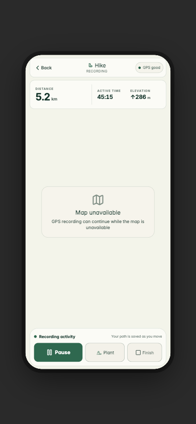
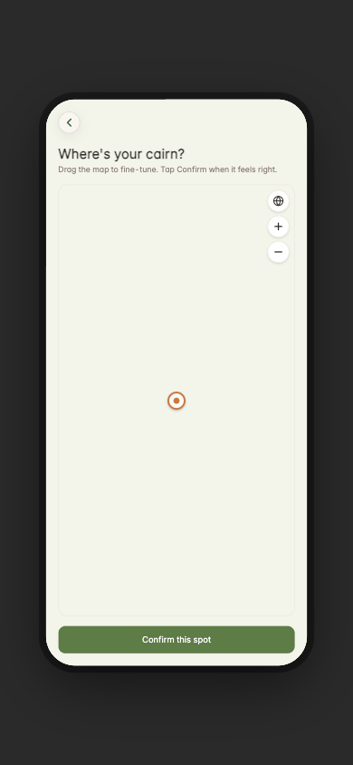
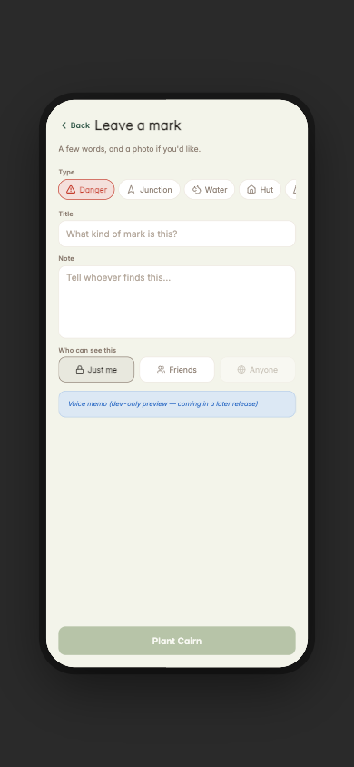
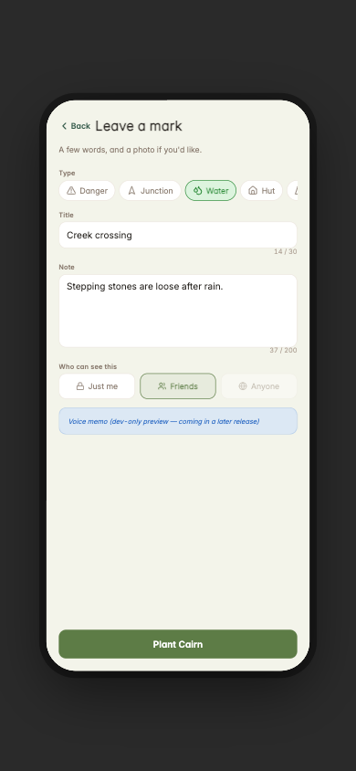
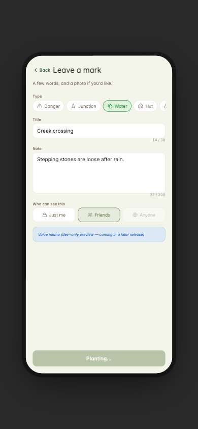
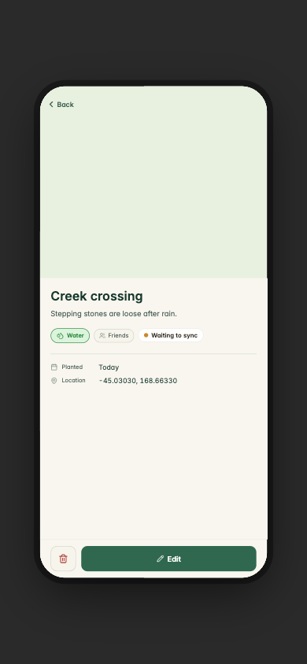
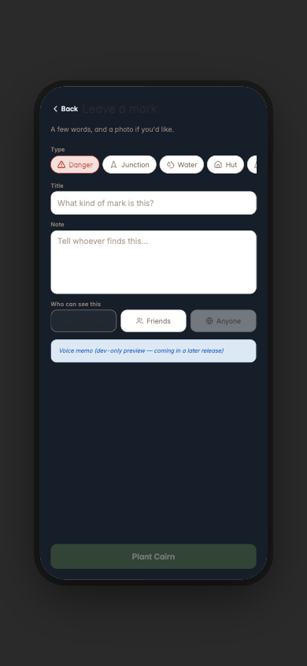
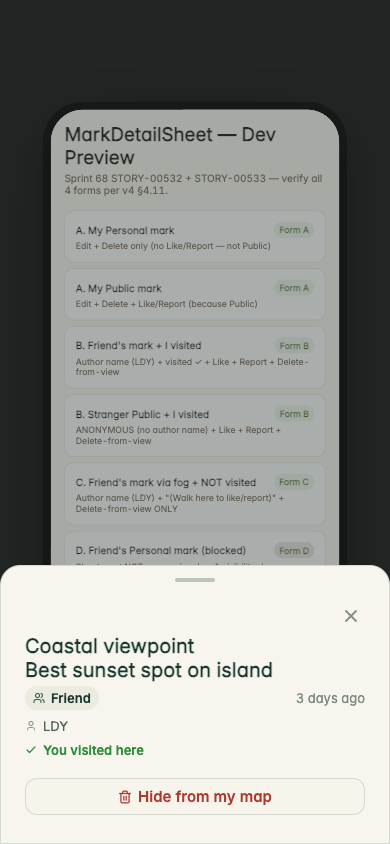
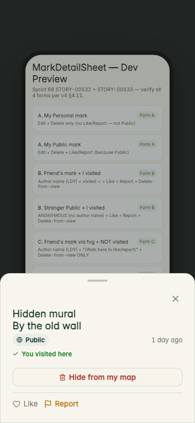

Product-family references
These accepted surfaces are references for material, typography, control character, atmosphere, and hierarchy—not layouts Plant should copy.


Hike → Plant journey
The endpoints feel Cairn: notice something in the landscape, then leave a durable trace. The intervening interaction leaves the Activity environment and becomes a three-step form workflow.






Theme continuity
Plant’s root adopts the accepted night environment, but child form primitives retain static day colors. This is a component-contract failure, not a request for a different visual direction.

Shared/social detail contracts
These sheets are the real shared production component rendered inside its developer scenario host. The host text behind each sheet is not production UI. In production, the friend/public journeys that should reach these forms are incomplete.


Evidence-backed product findings
A durable personal trace tied to exact place and Activity is distinctly Cairn and worth keeping.
One tap, trusted Activity coordinate, toast, and no context loss is the right outdoor character—though later enrichment is missing.
GPS, pin, taxonomy, title, note, audience, save, and forced detail make an occasional deliberate stop—not a frequent noticing gesture.
Friend and public surfaces exist in pieces but not as complete create → encounter → read → act journeys.
Danger reports and personal memories have different trust and lifecycle needs despite sharing the same type row.
Initial create is strong; Hut sync, modern edit, delete failure, and inert Retry make later state untrustworthy.
current/results.json. The complete forensic reasoning and source evidence are in PLANT_PRODUCT_UX_AUDIT.md.